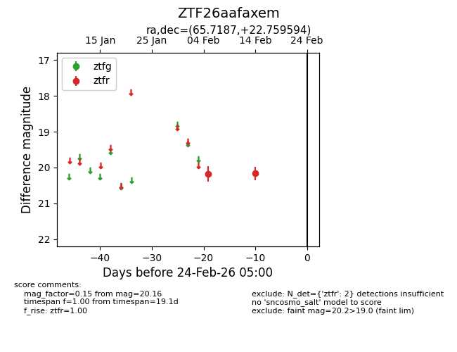
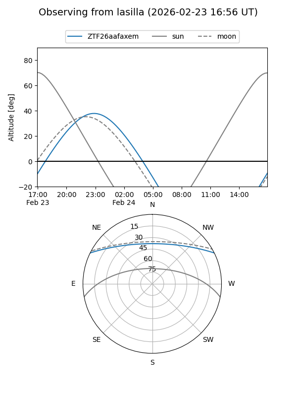
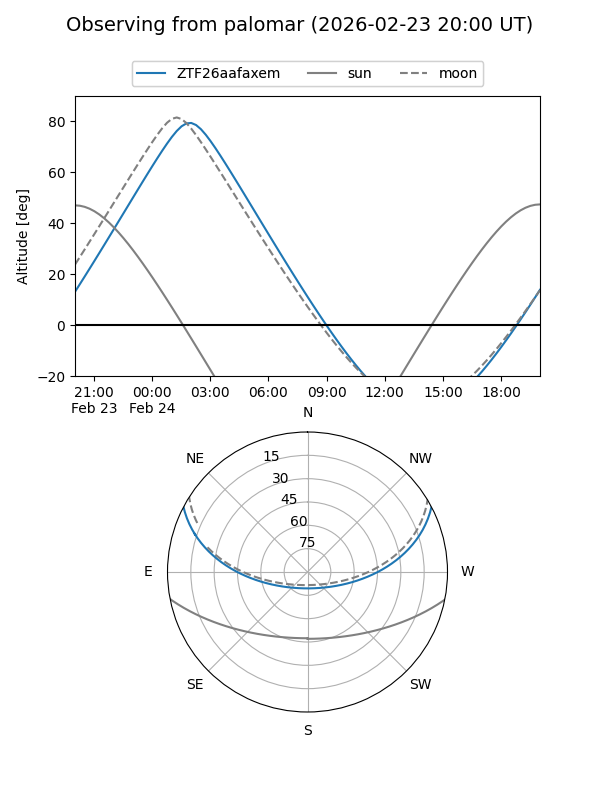

ZTF26aafaxem
Target ZTF26aafaxem at 2026-02-24 09:08
Aliases and brokers:
FINK: link
Lasair: link
ALeRCE: link
alt names
ZTF26aafaxem (ztf,fink_ztf)
Coordinates:
equatorial (ra, dec) = 65.7187,+22.75959
equatorial (HMS+DMS) = 04:22:52.48,+22:45:34.54
galactic (l, b) = (173.7947,-18.60904)
Flags:
Photometry:
last ztfr=20.16
2 ztfr detections
Lightcurve

Visibility


Additional plots